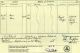

EAMOUR, James
-
Name EAMOUR, James [1] Born Mar 1820 Hurst, Berkshire, England, United Kingdom  [1]
[1] Christened 16 Apr 1820 Hurst, Berkshire, England, United Kingdom [1] Gender Male Occupation - Ag. Labourer [England] / Splitter [Australia]
Unique Id 85C7349B82CF44B68BBCA58CAE0457977EDA Died 16 May 1868 Adelaide, South Australia, Australia [1] - [As Eamer] - [Age 40 Years] - [Informant: ? Imah Witcombe] - [Cert. On. File Obtained From R.O., Adelaide, Australia 11 Aug 1994] - [Book 32 Page 85]

James Eamer - Death Certificate Buried 18 May 1868 Adelaide, South Australia, Australia [1] Person ID I1410 Tree One Last Modified 1 May 2021
Father AMER, Daniel, b. Abt 1776, Burghfield, Berkshire, England, United Kingdom , bur. 26 Feb 1824, Hurst, Berkshire, England, United Kingdom (Age ~ 48 years) Mother HAMDEN, Hannah, b. Abt 1783, Burghfield, Berkshire, England, United Kingdom , bur. 11 Feb 1855, Hurst, Berkshire, England, United Kingdom (Age ~ 72 years) Married 18 Oct 1802 Burghfield, Berkshire, England, United Kingdom [1] - [Daniel Under Surname Of Amor]
Family ID F456 Group Sheet | Family Chart
Family 1 NORRIS, Frances, b. Abt 1823, Hurst, Berkshire, England, United Kingdom , d. 19 Jan 1895, Reading, Berkshire, England, United Kingdom (Age ~ 72 years) Married 20 Sep 1845 Hurst, Berkshire, England, United Kingdom [1] Children + 1. EAMOUR, Jane, b. 17 Jul 1846, Whistley Green, Hurst, Berkshire, England, United Kingdom , d. 20 Jan 1920, Wembley, Middlesex, England, United Kingdom (Age 73 years)Last Modified 16 Oct 2008 Family ID F457 Group Sheet | Family Chart
Family 2 BERRY, Eliza[Beth], b. Abt 1836, d. 13 Jan 1907, Adelaide, South Australia, Australia (Age ~ 71 years) Children 1. EAMER, Alfred, b. 1859, Gumeracha, South Australia, Australia , d. Yes, date unknown+ 2. EAMER, Walter, b. 10 Dec 1860, Chain of Ponds, South Australia, Australia , d. 6 Apr 1906, Nannine, Western Australia, Australia (Age 45 years)+ 3. EAMER, Sarah Ann, b. 28 Mar 1863, Maidstone, South Australia, Australia , d. Yes, date unknown4. EAMER, Arthur, b. 11 May 1866, Maidstone, South Australia, Australia , d. 16 Jul 1868, Maidstone, South Australia, Australia (Age 2 years)Last Modified 16 Oct 2008 Family ID F314 Group Sheet | Family Chart
-
Event Map  = Link to Google Earth
= Link to Google Earth Pin Legend  : Address
: Address
 : Location
: Location
 : City/Town
: City/Town
 : County/Shire
: County/Shire
 : State/Province
: State/Province
 : Country
: Country
 : Not Set
: Not Set
-
Documents James Eamour
Convict #104
-
Notes - NOTES by Denis Hamilton
=====================
James with Henry NASH on the 6th December 1847 stole a Ewe to the value of £1.00 belonging to Oliver KING the Elder at Husrt, Berkshire. After being arrested they were sent for Trial. At County Quarter Sessions, Abingdon, Berks on the 3rd January 1848 they both pleaded Not Guilty but the Verdict was Guilty and they were both sentenced to be Transported for Fifteen years. There was some doubt with James guilt, there were footsteps at the scene of the crime but no evidence that they belonged to James. Was in Reading Gaol, then Millbank, then Pentonville and finally at Portland, Dorset before being shipped to Australia with Henry aboard the "Hashemy" on the 19th July 1850. Arrived Freemantle [The Swan Colony] on the 25th October 1850. They were set to work on building the Freemantle Prison. Ticket Of Leave was granted to James on the 10th August 1851 and received a Conditional Pardon on the 23rd March 1856. He left Western Australia aboard the "Lochinuar" to South Australia on the 22nd June 1857. Sometime [cannot confirm when or where] he took a Common-law-Wife Eliza[beth] BERRY and children were born. They resided in the Talunga district and later settled at Chain Of Ponds. It appears that James had a drink problem and was admitted to the Royal Adelaide Hospital / Asylum during 1866 & 1867. James died at the hospital on the 16th May 1868 with General Paralysis aged 48 years [Death Cert says 40 years].NOTE:- Much researching info, copies of documents, newspaper reports, prison records etc on James is Filed in the James EAMOUR/EAMER Large Ring Binder - it fills the Binder. Have found more documentation on James [having been a Criminal] than any other person on my lineage.
James signed his name with an x. Later in Australia he learnt to sign his name.
When son Arthur was born, James and Eliza[beth] were living in Maidstone in the District of Talunga in Australia.
At the time of James death his address was Chain Of Ponds which is near Adelaide, South Australia. I have not been able to confirm this, but it is believed that Alcholocics were sent to Adelaide Hospital/Asylum at this time.
James is entered in the "Biographical Index Of South Australians 1836-1855" - Page 448. This book was published in 1986 to commemorate the 150th Jubilee of South Australia. [Copy held in the S.O.G. / Ref: AUA/SA/G10].
On the 1891 Census for Hurst, Berkshire [RG12/1001 Folio 66 Page 26] - living next door to one another were Gilbert KING and his brother Oliver KING who were connected with James' Trial. Gilbert [75] was "Farmer with Means" and Oliver [77] was "Living on his own Means". Their sisters were also "Living on her Means" and the three children of Olivers living with him and his wife were all single aged between 30 and 40. Were they happy, did they ever give a thought to James!
WEBSITE: http://www.convictcentral.com :-EAMER James / 104/ Farm Labourer/ M/ Child: One/ Height: 5' 9 1/2"/ Hair: Brown/ Eyes: Blue/ Face: Long/ Complexion: Dark/ Build: Stout/ 104/ No distinguishing Marks.
FREMANTLE PRISON RECORD:
Alias: EAMIER
Date of Birth: Mar 1818
Marital Status: Married 1 child
Occupation: Farm labourer
Literacy: Semiliterate
Sentence Date: 3 Jan 1848
Sentence Place: Abingdon, Berkshire, England
Crime: Stealing a sheep
Sentence Period: 15 years
Ticket Leave Date: 10 Aug 1851
Conditional Pardon Date: 22 Mar 1856
Comments: To South Australia per Lochinvar, 22 Jun 1857
*********************************************** DETAILS OF HENRY NASH SENTENCED WITH JAMES
CENSUS: 6 June 1841 [HO107/28/3 Folio 5 Page 4] Merrill Green, Hurst, Berkshire. Henry NASH [25] Ag. Lab., wife Eliza [30], children Mary [8], Emma [5], Jane [2] and Eliza [5 months].
13/1/2006. From Website On Line www.genseek.net/cons.htm - details of Henry:-Convict No. 147 arrived at Freemantle, Swan River Colony, Australia with James on the "Hashemy" on the 25 Oct 1850. His Birth Date 1810. Married with 5 children. Labourer. Literate. C/E. Sentenced to 15 years with James in 1848 at Abingdon, Berks. Crime: Steal a sheep. Ticket Of Leave Granted 10 Aug 1851. Comments: To South Australia per "Guyon" 27 Apr 1856. [Copy from Website in EAMOUR File].
Henry seems to have made a quicker departure from W.A. than James did. After January 1864 Convicts were not allowed to leave W.A. for another Colony under a Ticket Of Leave and they were not granted a Pardon but had to serve their full sentence before they could leave the Colony.
Wonder what became of Henry - I doubt if I will research him.
FREMANTLE PRISON RECORD:
Date of Birth: 1810
Marital Status: Married 5 children
Occupation: Labourer
Literacy: Literate
Sentence Date: 1848
Sentence Place: Abingdon, Berkshire, England
Crime: Stealing a sheep
Sentence Period: 15 years
Ticket Leave Date: 10 Aug 1851
Conditional Pardon Date: 5 Apr 1856
************************************************ [1]
- NOTES by Denis Hamilton
-
Sources - [S15] Denis Hamilton.
- [S15] Denis Hamilton.